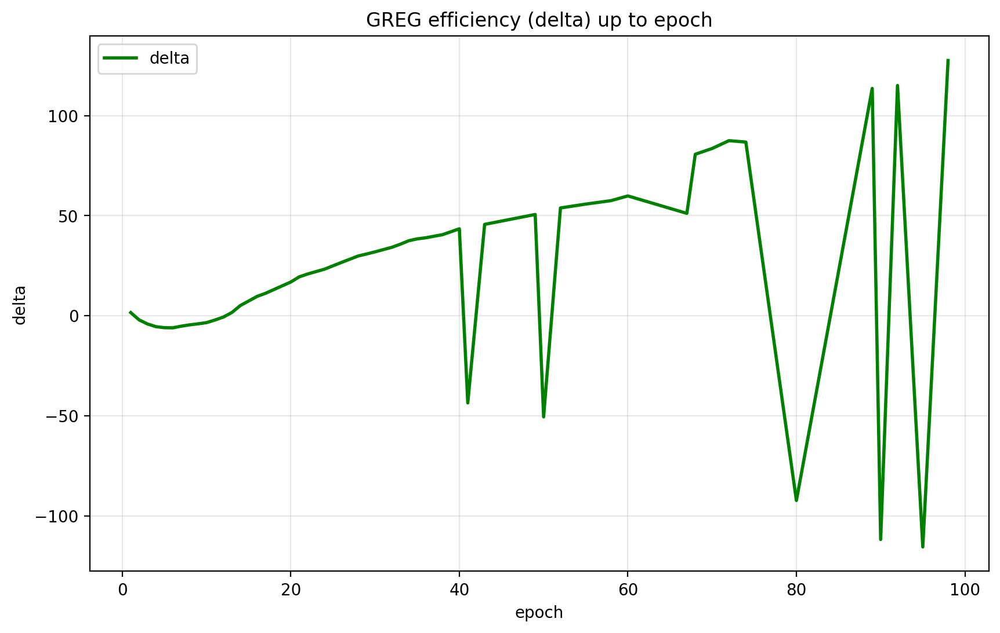
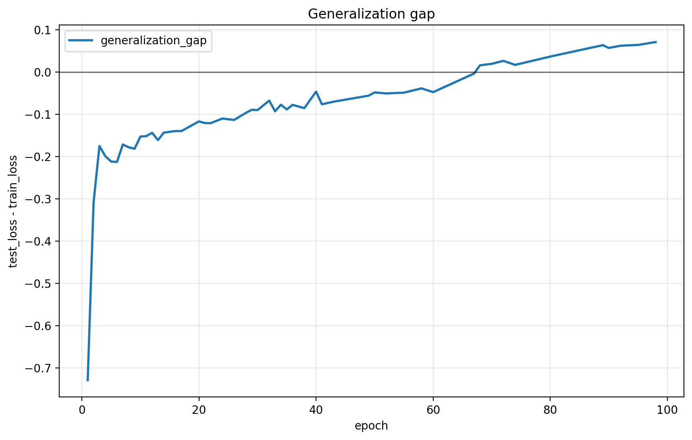
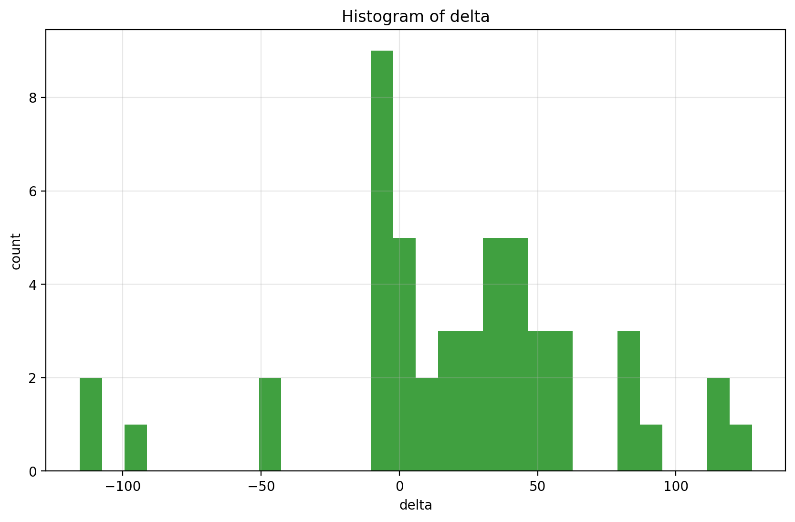
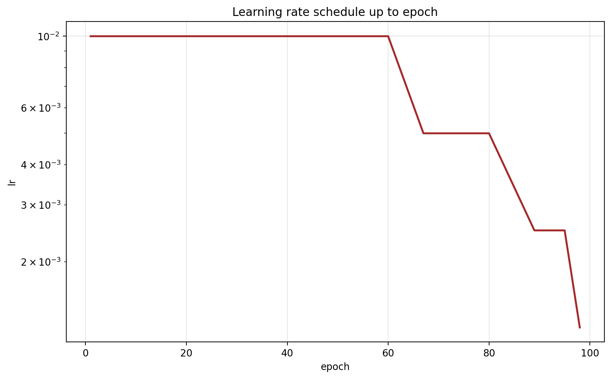
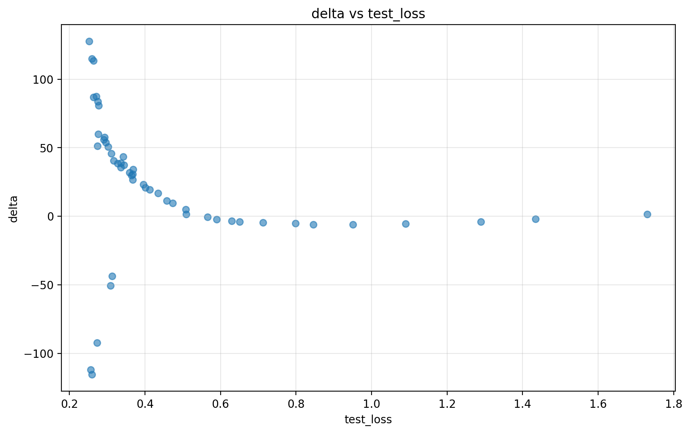
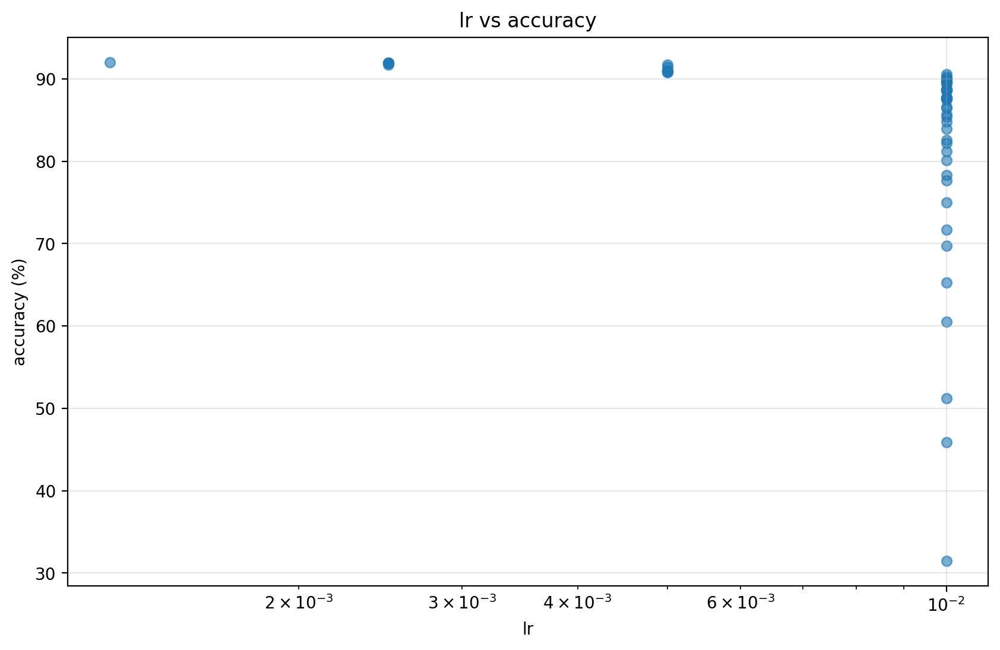

loss train vs test

Log: results_v3\greg_v3_20251222_235207_log.json
Max epoch: 98
{
"total_rows": 50,
"total_epochs": 98,
"max_epoch_used": 98,
"best_accuracy": 92.05,
"best_accuracy_epoch": 98,
"final_accuracy_at_epoch_max": 92.05,
"best_test_loss": 0.2523617509611045,
"best_test_loss_epoch": 98,
"final_test_loss_at_epoch_max": 0.2523617509611045,
"generalization_gap_final": 0.07125753988633518,
"generalization_gap_mean": -0.09567736349529797,
"generalization_gap_std": 0.12429565687516012,
"epoch98": {
"epoch": 98,
"train_loss": 0.18110421107476934,
"test_loss": 0.2523617509611045,
"accuracy": 92.05,
"delta": 127.52179681166017,
"lr": 0.00125
},
"delta_zone_counts": {
"Fora": 18,
"Alerta": 14,
"Critica": 13,
"Otima": 5
},
"corr_delta_vs_test_loss": -0.2661578248611766,
"corr_delta_vs_train_loss": -0.264085281676745,
"corr_lr_vs_accuracy": -0.34285370125779985,
"plateau_epoch_estimate_test_loss": null
}







| epoch | train_loss | test_loss | accuracy | lr | delta | best_accuracy | generalization_gap | test_loss_rolling_mean | test_loss_rolling_slope | delta_zone |
|---|---|---|---|---|---|---|---|---|---|---|
| 1 | 2.459439 | 1.730665 | 31.510000 | 0.010000 | 1.530451 | 31.510000 | -0.728774 | Fora | ||
| 2 | 1.742866 | 1.434252 | 45.920000 | 0.010000 | -2.123412 | 45.920000 | -0.308614 | Fora | ||
| 3 | 1.463773 | 1.289014 | 51.230000 | 0.010000 | -4.177349 | 51.230000 | -0.174759 | 1.484643 | -0.220826 | Fora |
| 4 | 1.288913 | 1.090320 | 60.540000 | 0.010000 | -5.508396 | 60.540000 | -0.198593 | 1.386063 | -0.206627 | Fora |
| 5 | 1.162218 | 0.950741 | 65.300000 | 0.010000 | -6.013830 | 65.300000 | -0.211478 | 1.298998 | -0.190378 | Fora |
| 6 | 1.058669 | 0.846239 | 69.770000 | 0.010000 | -6.076023 | 69.770000 | -0.212429 | 1.122113 | -0.173467 | Fora |
| 7 | 0.969473 | 0.798434 | 71.700000 | 0.010000 | -5.245608 | 71.700000 | -0.171040 | 0.994949 | -0.153964 | Fora |
| 8 | 0.890400 | 0.712575 | 75.000000 | 0.010000 | -4.590407 | 75.000000 | -0.177826 | 0.879662 | -0.121081 | Fora |
| 9 | 0.831577 | 0.650379 | 77.670000 | 0.010000 | -4.079846 | 77.670000 | -0.181198 | 0.791673 | -0.100846 | Fora |
| 10 | 0.782382 | 0.630044 | 78.350000 | 0.010000 | -3.477474 | 78.350000 | -0.152338 | 0.727534 | -0.075543 | Fora |
| 11 | 0.740720 | 0.589383 | 80.140000 | 0.010000 | -2.180613 | 80.140000 | -0.151337 | 0.676163 | -0.059447 | Fora |
| 12 | 0.708943 | 0.565542 | 81.190000 | 0.010000 | -0.698610 | 81.190000 | -0.143401 | 0.629585 | -0.047954 | Fora |
| epoch | train_loss | test_loss | accuracy | lr | delta | best_accuracy | generalization_gap | test_loss_rolling_mean | test_loss_rolling_slope | delta_zone |
|---|---|---|---|---|---|---|---|---|---|---|
| 60 | 0.323771 | 0.276551 | 90.540000 | 0.010000 | 59.834990 | 90.540000 | -0.047220 | 0.292874 | -0.004914 | Critica |
| 67 | 0.277443 | 0.274269 | 90.890000 | 0.005000 | 51.120544 | 90.890000 | -0.003174 | 0.285982 | -0.005379 | Critica |
| 68 | 0.260616 | 0.276771 | 91.040000 | 0.005000 | 80.659091 | 91.040000 | 0.016155 | 0.282231 | -0.005442 | Critica |
| 70 | 0.255621 | 0.275368 | 90.780000 | 0.005000 | 83.547486 | 91.040000 | 0.019748 | 0.279196 | -0.003813 | Critica |
| 72 | 0.244122 | 0.270886 | 91.450000 | 0.005000 | 87.456535 | 91.450000 | 0.026764 | 0.274769 | -0.003359 | Critica |
| 74 | 0.245938 | 0.263168 | 91.750000 | 0.005000 | 86.749393 | 91.750000 | 0.017230 | 0.272092 | -0.003564 | Critica |
| 80 | 0.235542 | 0.272441 | 91.040000 | 0.005000 | -92.393622 | 91.750000 | 0.036899 | 0.271727 | -0.001443 | Fora |
| 89 | 0.199611 | 0.263550 | 91.760000 | 0.002500 | 113.574312 | 91.760000 | 0.063938 | 0.269083 | -0.001893 | Critica |
| 90 | 0.198915 | 0.256178 | 91.920000 | 0.002500 | -111.869087 | 91.920000 | 0.057262 | 0.265245 | -0.002995 | Fora |
| 92 | 0.196761 | 0.259337 | 91.940000 | 0.002500 | 115.020855 | 91.940000 | 0.062576 | 0.262935 | -0.002755 | Critica |
| 95 | 0.195257 | 0.259711 | 91.980000 | 0.002500 | -115.599941 | 91.980000 | 0.064455 | 0.262243 | -0.002052 | Fora |
| 98 | 0.181104 | 0.252362 | 92.050000 | 0.001250 | 127.521797 | 92.050000 | 0.071258 | 0.258227 | -0.002218 | Critica |
Gerado automaticamente por generate_training_report_epoch98.py.